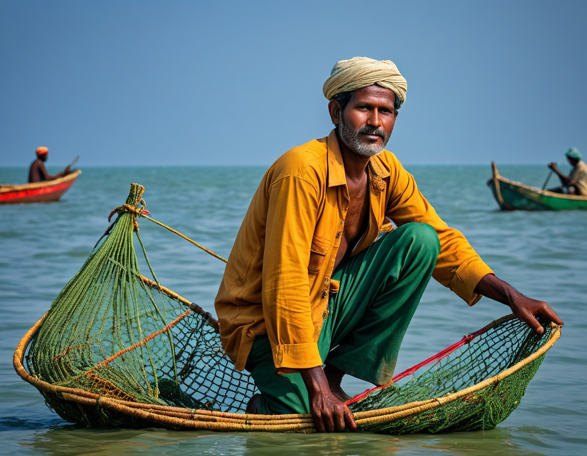
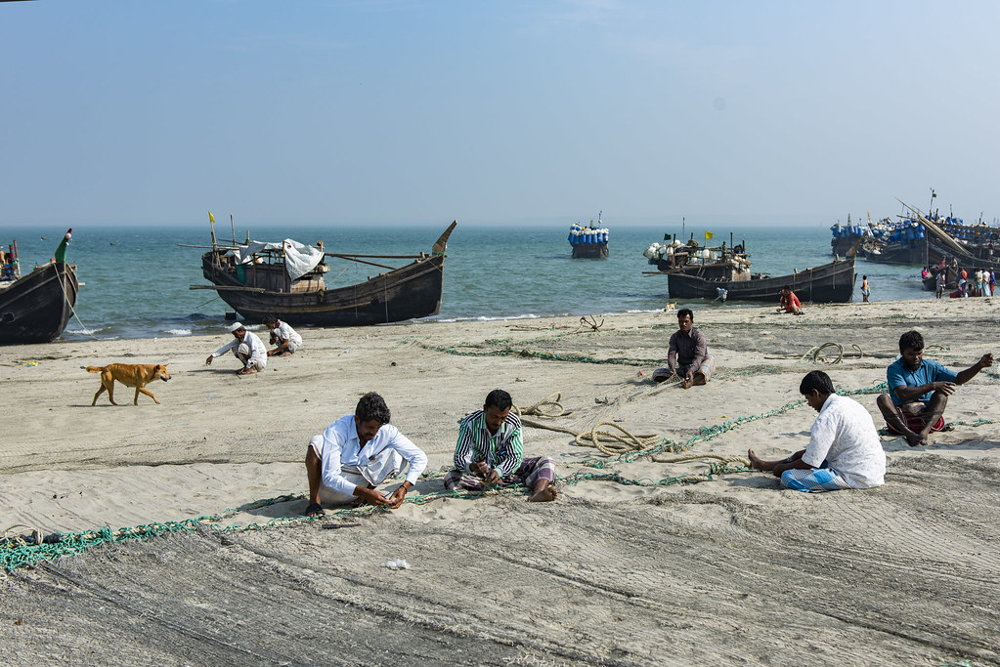

Fishermen have always had a deep connection with the waters. Their daily lives revolve around the sea, fostering a deep respect for nature. For centuries, fishing has been a primary source of food and income for millions of people worldwide.
In recent years, the importance of sustainable fishing practices has gained more recognition. Fishermen are not only guardians of the ocean but also play a critical role in maintaining the balance of marine ecosystems. Their contributions go far beyond just catching fish; they help ensure the survival of aquatic life.
For more information on marine life, visit Marine Life Society.
The fishermen communities of Bengal were diverse with regional variations. Apart from Malos, Kaibartas, Bagdis, and Pods, the numerically significant fishermen sub-castes, there were many other smaller and localized communities involved in fishing. H. H. Risley in his "The Tribes and Castes of Bengal" described a community living on the bank of Meghna called Lohait-Kuri, who, unlike the majority of the Bengal fishermen, rather than fishing nets used rectangular iron bars for catching fish. B. L. Chaudhuri, who in the early twentieth century extensively cataloged fish and aquatic plants of many places in India, wrote about the Kalar community of Jessore which was involved in fish pickling.
The hereditary fishermen of Bengal belonged to a lower strata of the Hindu caste hierarchy and later on became part of the broader scheduled castes category. Despite the stigma associated with their profession and the lack of social status, the fishermen were proud of their professional and social life with their distinctive customs, practices, and rituals. That does not mean they remained impervious to changes that the society as a whole and the other communities were undergoing. For economic, ecological, and reasons related to social mobility, hereditary fishermen changed the vocations of their ancestors and settled down in new professions. Chashi-Kaibartas and Malla-Metias, as their names indicate, were those who had changed their profession from fishing to cultivation. Some straddled both fishing and other professions as in the Sukdebhpur village of Titas Ekti Nodir Naam. Malo homes have fishing and tilling tools side by side.